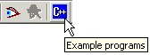
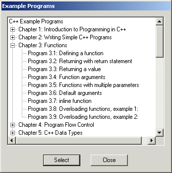

Quincy is integrated with the example programs in the book. To proceed through the examples as you read the book, do one of the following:
(If the example programs are not installed on your PC, the Example Programs button is not visible.)

Any of these actions opens the Example Programs dialog shown here.

To load a specific example into Quincy:
Quincy loads the source code files associated with that example into its document windows. Some examples involve the Watch Window. Using the Example Programs dialog to launch such examples sets watch variables and opens the Watch Window when you load the examples. See "Watching Variables" later in this document. This approach also sets Quincy's build options to match the example. See Setting Options later in this document.